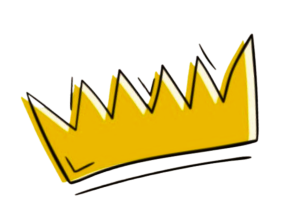
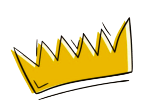

Hello, traveler!
Welcome to my domain! My name is Yo, and I’m a humble yet curious
high-school coder with a passion for all things tech. I’ve been exploring the fascinating
world of programming and have gained some knowledge in languages like HTML, CSS, and
Python. At the moment, I’m diving deeper into JavaScript and enjoying the journey of
mastering it to expand my toolkit. Apart from coding, I have a creative side as well—I
love working on design projects using Figma, where I get to bring ideas to life visually.
When I’m not programming or diving into something new to learn, you’ll probably find me
unwinding with my favorite anime, getting lost in a good book, or enjoying an adventure
in the world of video games. It’s great to have you here, and I hope you enjoy exploring
this space with me!